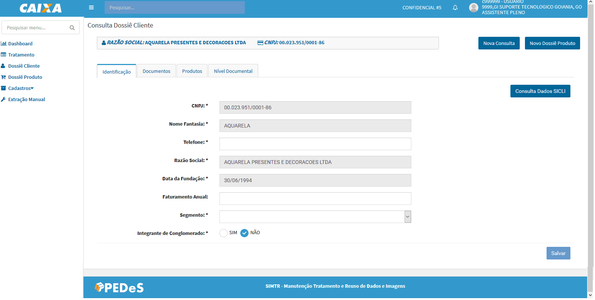
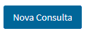
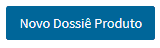
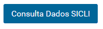

Dossiê Cliente

- Identificação
Para cadastrar um dossiê cliente é necessário informar o CPF/CNPJ e clica na opção

O sistema apresenta as informações do cliente recuperadas do SICPF e SIISO, bloqueadas para alteração.
- Documentos
Para submissão de documentos pessoais ao dossiê cliente são apresentadas três opções: upload (Novo Documento) scanner (Digitalizar) e declaração de dados (Dados Declarados). Onde:
Novo Documento – apresenta o procedimento padrão do Windows para esse tipo de operação;
Digitalizar – apresenta um formulário para as configurações: do dispositivo, ip, formato, resolução dentre outras informações que são salvas no local storage até a próxima atualização do cachê do navegador;
Dados Declarados – apresenta um formulário com os campos conforme o tipo de identificador do cliente para preenchimento, após salvar os dados gera-se uma minuta com os dados informados.
Os documentos com situação ativo, poderão ser reutilizados no dossiê produto.
Os formatos de documentos aceitáveis pelo SIMTR são: PDF, JPC e PNG.
- Produtos
Apresenta a lista de processos cadastrados/contratados pelo cliente, permitindo a consulta e/ou edição (complementação) dos mesmos.
A consulta do dossiê produto, dependendo da situação é possível complementar os dados pela opção Manipular, o sistema permite realizar a edição.
- Nível Documental
Apresenta a lista de produtos aptos para contratação pelo cliente, considerando a documentação vigente.
Ações:
O botão permite realizar uma nova consulta de dossiê cliente, seja pessoa Física ou Jurídica.
O botão permite iniciar uma nova demanda. Esse botão pode ser acessado pelos menus Dossiê Cliente e Dossiê produto.
O botão permite realiza consulta dos dados doCPF/CNPJ na base do SICLI.